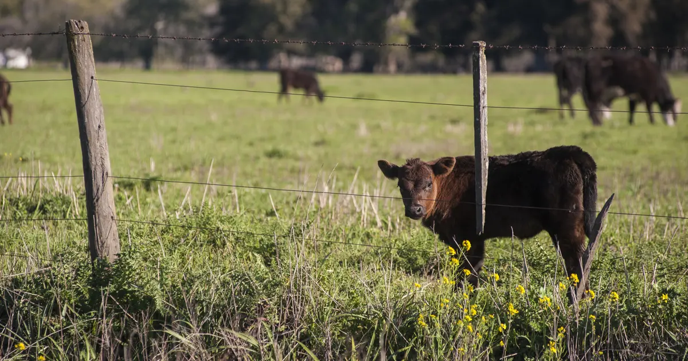
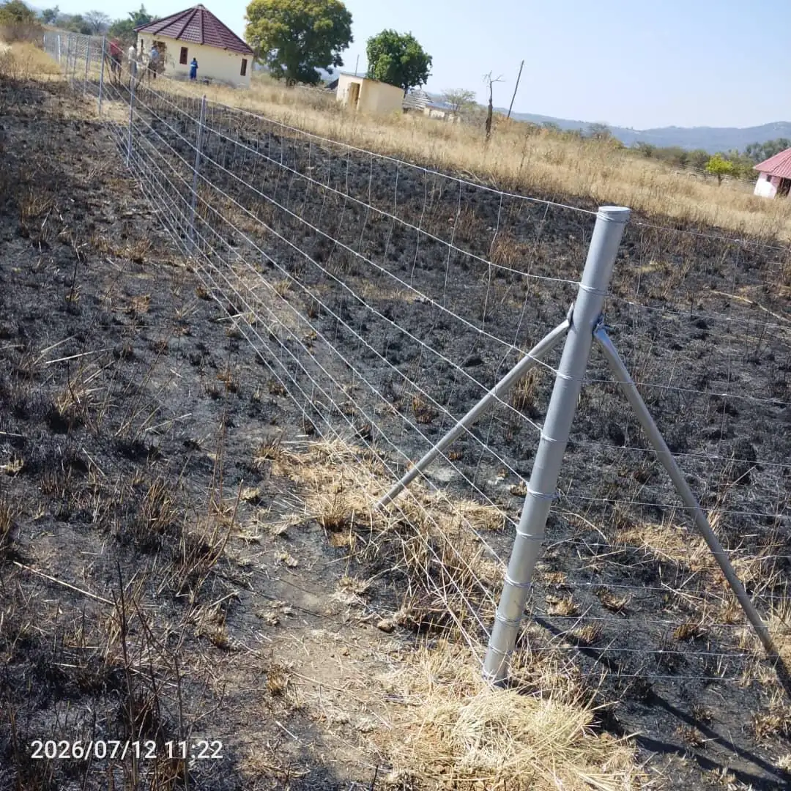

Quick answer
Field fence is a knotted mesh of high-tensile galvanised wire with graduated spacing: tighter at the bottom to stop small animals pushing through, wider at the top. Choose the height and spacing for the animals you keep (cattle, goats and sheep, or game), brace every corner and gate post properly, and add barbed wire strands above for extra security. Most of the cost comes from the length of the boundary, the number of corners and gates, and the posts.

What is field fence?
Field fence (also called stock fence, game fence or knotted mesh) is a roll of horizontal line wires held together by vertical stay wires and knots. The horizontal wires are closer together near the ground and wider apart at the top. That graduated spacing stops lambs, kids and small game from slipping through, while keeping the fence light enough for long runs.
Azzar Field Fence is made from high-tensile galvanised wire with strong knotted joints. It flexes under pressure from animals and springs back instead of sagging, and it follows slopes and uneven ground better than rigid fencing.
Choose the fence for your animals
| Animals | What matters most | Common approach |
|---|---|---|
| Cattle | Strength and tension: cattle lean and push | Field fence on well-braced posts, often with barbed wire strands above |
| Goats and sheep | Tight spacing near the ground; goats climb and squeeze | Field fence with close bottom spacing, fitted tight to the ground |
| Game and wildlife | Height and strength; game jump and charge | Taller game fence with strong posts and bracing |
| Mixed farming | Works for the smallest and the strongest animal | Field fence sized for the smallest stock, strands for the largest |
If you are not sure, tell us what you keep and the terrain, and we will recommend a height and spacing.

Posts, corners and bracing
The mesh only works if the posts hold it tight. Most fence failures start at a corner or gate post that moves.
- Corner and end posts take the strain of the whole line. They must be strong and braced with a stay or brace assembly.
- Line posts hold the mesh at height between the corners. Spacing depends on terrain and animal pressure.
- Gate posts carry the weight of the gate as well as the fence, so brace them like corners.
- Dips, rivers and gullies need extra posts so animals cannot crawl under.
Azzar supplies wooden and steel posts, corner posts, brace assemblies and tensioning accessories for a complete installation.
Add barbed wire for extra security
A strand or two of barbed wire above field fence stops cattle leaning over the top and deters people from climbing. A strand at ground level can stop animals digging or pushing under. See razor wire vs barbed wire for more on strands.
Field fence vs other farm fences
| Fence | Best for | Watch out for |
|---|---|---|
| Field fence | Livestock and game boundaries, long runs, slopes | Needs proper bracing and tension |
| Barbed wire only | Cattle on large ranches, low budget | Small stock can get through; can injure animals |
| Diamond mesh | Yards, homesteads, kraals, gardens | Higher cost over long distances |
Plan before you fence
- Measure the boundary and mark corners, gates and dips.
- Decide where gates go for vehicles, tractors and moving animals between paddocks.
- Clear the fence line of bush and rocks so the mesh sits close to the ground.
- Check the terrain: rivers, rocky ground and steep slopes need extra posts and bracing.
- Think about rotation: internal paddock fences help you rotate grazing and rest land.
Looking after a farm fence
- Walk or drive the boundary regularly, especially after storms.
- Re-tension sagging sections and repair breaks quickly, before animals learn the gap.
- Keep vegetation clear along the line to reduce fire damage and make inspection easier.
What affects the cost
The biggest factors are the length of the boundary, the fence height, the number of corners and gates, the type and spacing of posts, any barbed wire strands, the terrain and whether you need supply only or full installation. Send Azzar the type of livestock or game, the approximate distance, the farm location and a few photos, and we will plan the materials and quote. Azzar has fenced farm boundaries of several kilometres in Mashonaland. See farm fencing.
Get a quote from Azzar
Send us your location, the approximate length, what you want to protect and a few photos. We reply with a recommendation and a no-obligation quote, and arrange a free site assessment if one is needed.